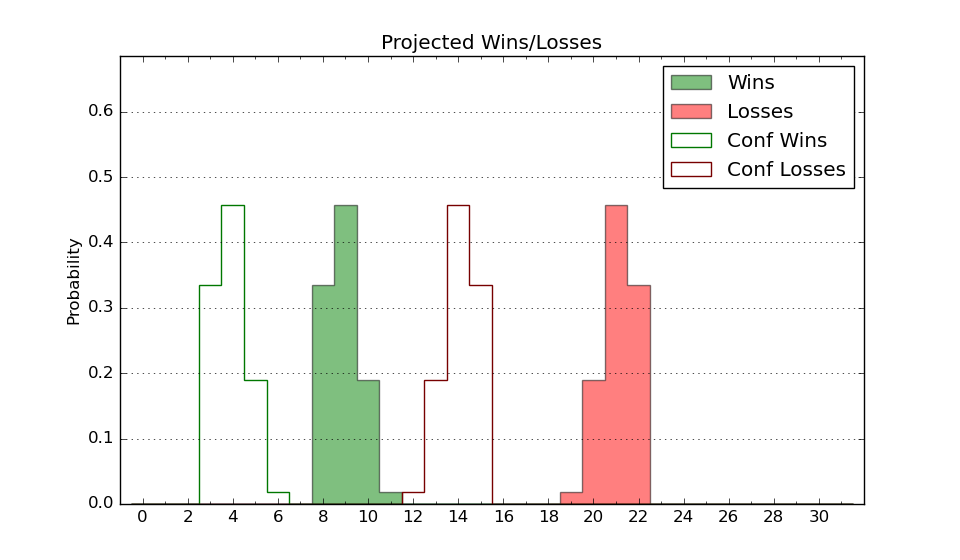

| Home | Game Probabilities | Conferences | Preseason Predictions | Odds Charts | NCAA Tournament |
| City: | Cullowhee, North Carolina | |
| Conference: | Southern (10th)
| |
| Record: | 5-13 (Conf) 10-21 (Overall) | |
| Ratings: | Comp.: -11.0 (285th) Net: -11.0 (285th) Off: 97.7 (246th) Def: 108.7 (299th) SoR: 0.0 (156th) |
| Remaining | ||||||
|---|---|---|---|---|---|---|
| Date | Opponent | Win Prob | Pred. | |||
| Previous | Game Score | |||||
| Date | Opponent | Win Prob | Result | Off | Def | Net |
| 11/9 | Bowling Green (299) | 67.2% | W 79-71 | -15.1 | 21.4 | 6.4 |
| 11/12 | @Wake Forest (40) | 3.5% | L 75-87 | 8.4 | 8.1 | 16.5 |
| 11/14 | @East Carolina (193) | 18.4% | L 79-95 | 12.0 | -15.4 | -3.4 |
| 11/19 | (N) UMBC (227) | 35.2% | L 75-91 | -2.8 | -13.1 | -16.0 |
| 11/20 | (N) American (328) | 64.4% | W 80-79 | 11.9 | -10.3 | 1.6 |
| 11/21 | @Longwood (140) | 12.6% | W 64-53 | -1.5 | 37.6 | 36.1 |
| 11/27 | @Gardner Webb (165) | 15.4% | L 59-87 | -0.9 | -25.7 | -26.6 |
| 12/4 | @USC Upstate (273) | 32.1% | W 78-73 | 8.7 | 5.6 | 14.3 |
| 12/8 | Tennessee Tech (242) | 55.6% | W 74-69 | -5.7 | 11.5 | 5.8 |
| 12/11 | UNC Asheville (208) | 46.1% | L 72-73 | -3.7 | -0.0 | -3.7 |
| 12/20 | @Georgia (217) | 21.0% | L 79-85 | 5.2 | 2.6 | 7.9 |
| 12/22 | @Charlotte (186) | 17.4% | L 82-98 | 16.5 | -24.1 | -7.6 |
| 1/5 | The Citadel (222) | 49.1% | W 94-90 | 12.0 | -15.8 | -3.8 |
| 1/8 | @Samford (184) | 17.2% | L 60-85 | -16.8 | 0.9 | -15.9 |
| 1/10 | @East Tennessee St. (175) | 16.5% | L 69-87 | -7.0 | -5.5 | -12.4 |
| 1/12 | Chattanooga (68) | 15.3% | W 70-59 | -0.7 | 27.0 | 26.3 |
| 1/15 | Wofford (105) | 24.5% | L 64-84 | -7.5 | -18.6 | -26.1 |
| 1/19 | @Furman (75) | 5.6% | L 50-88 | -19.1 | -6.1 | -25.3 |
| 1/22 | @Mercer (185) | 17.2% | L 64-72 | 18.7 | -8.2 | 10.5 |
| 1/26 | @The Citadel (222) | 22.1% | L 66-68 | -0.5 | 14.2 | 13.6 |
| 1/29 | Samford (184) | 41.4% | L 64-74 | -14.8 | 2.6 | -12.3 |
| 2/2 | East Tennessee St. (175) | 40.3% | W 87-84 | 24.1 | -10.6 | 13.5 |
| 2/4 | @VMI (145) | 13.2% | L 69-76 | -5.5 | 10.9 | 5.3 |
| 2/7 | UNC Greensboro (169) | 38.5% | L 49-68 | -21.0 | -1.0 | -22.0 |
| 2/9 | @Chattanooga (68) | 5.0% | L 47-65 | -21.3 | 24.8 | 3.5 |
| 2/12 | @Wofford (105) | 8.7% | L 57-69 | -6.1 | 7.2 | 1.1 |
| 2/16 | Furman (75) | 16.7% | L 85-103 | 28.3 | -28.5 | -0.2 |
| 2/19 | Mercer (185) | 41.4% | W 69-65 | 4.2 | 5.2 | 9.4 |
| 2/23 | @UNC Greensboro (169) | 15.5% | L 64-73 | 17.1 | -22.2 | -5.1 |
| 2/26 | VMI (145) | 34.1% | W 82-73 | 6.9 | 14.0 | 20.9 |
| 3/4 | (N) Mercer (185) | 27.7% | L 53-81 | -22.5 | -5.4 | -27.9 |
| Stats & Trends | |||||
|---|---|---|---|---|---|
| Current | Day | Week | Month | Season | |
| Composite | -11.0 | -0.0 | -0.5 | +0.5 | -2.7 |
| Comp Rank | 285 | -1 | -6 | +8 | +5 |
| Net Efficiency | -11.0 | -0.0 | -0.5 | +0.5 | -- |
| Net Rank | 285 | -1 | -6 | +9 | -- |
| Off Efficiency | 97.7 | -0.0 | -1.6 | -0.7 | -- |
| Off Rank | 246 | +2 | -5 | +4 | -- |
| Def Efficiency | 108.7 | +0.0 | +1.1 | +1.2 | -- |
| Def Rank | 299 | +1 | -- | +7 | -- |
| SoS Rank | 138 | -- | -8 | +30 | -- |
| Exp. Wins | 10.0 | -- | -- | +0.8 | +0.4 |
| Exp. Conf Wins | 5.0 | -- | -- | +0.8 | -0.6 |
| Conf Champ Prob | 0.0 | -- | -- | -- | -0.6 |

| Advanced Stats | ||
|---|---|---|
| Stat | Value | Rank |
| Off Eff FG % | 0.469 | 288 |
| Off Ast Ratio | 0.129 | 265 |
| Off ORB% | 0.280 | 118 |
| Off TO Rate | 0.158 | 178 |
| Off FT Ratio | 0.288 | 227 |
| Def Eff FG % | 0.518 | 240 |
| Def Ast Ratio | 0.152 | 258 |
| Def ORB% | 0.277 | 233 |
| Def TO Rate | 0.121 | 346 |
| Def FT Ratio | 0.310 | 208 |